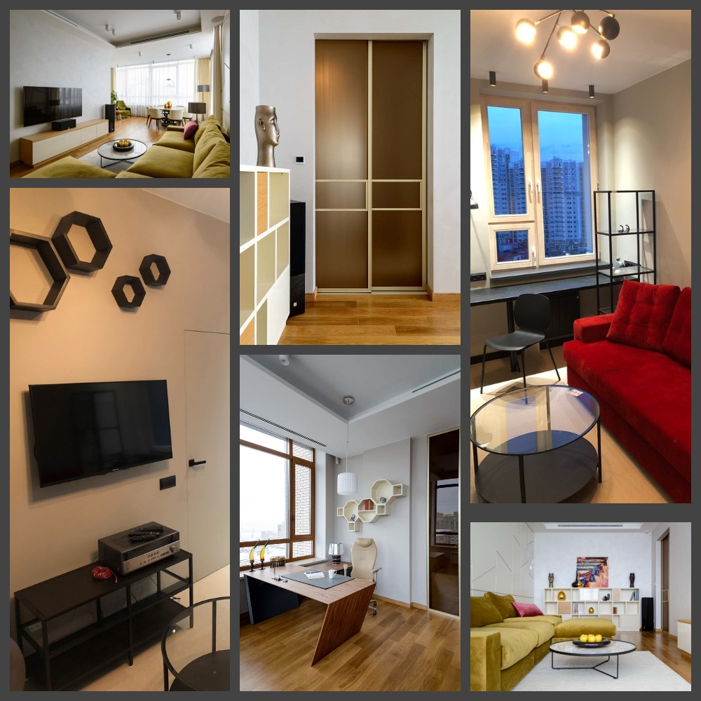
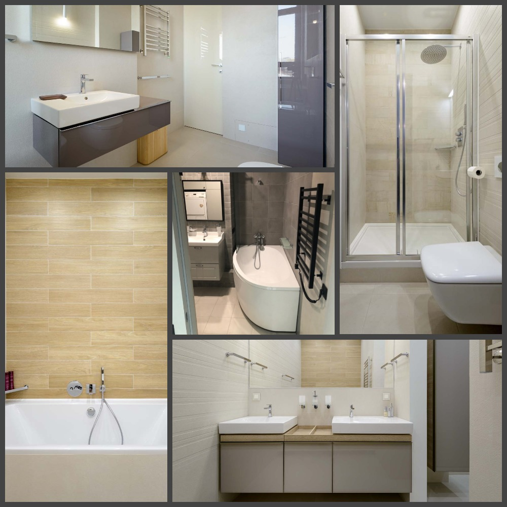
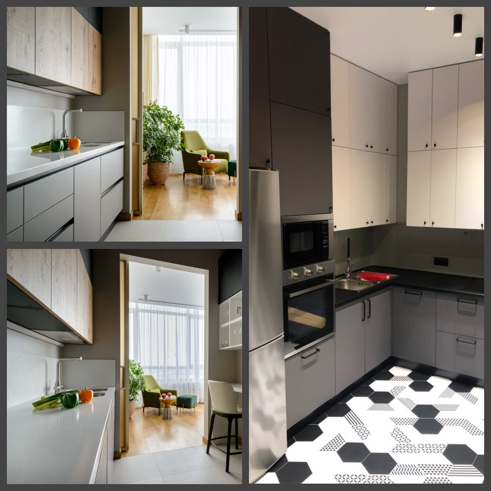
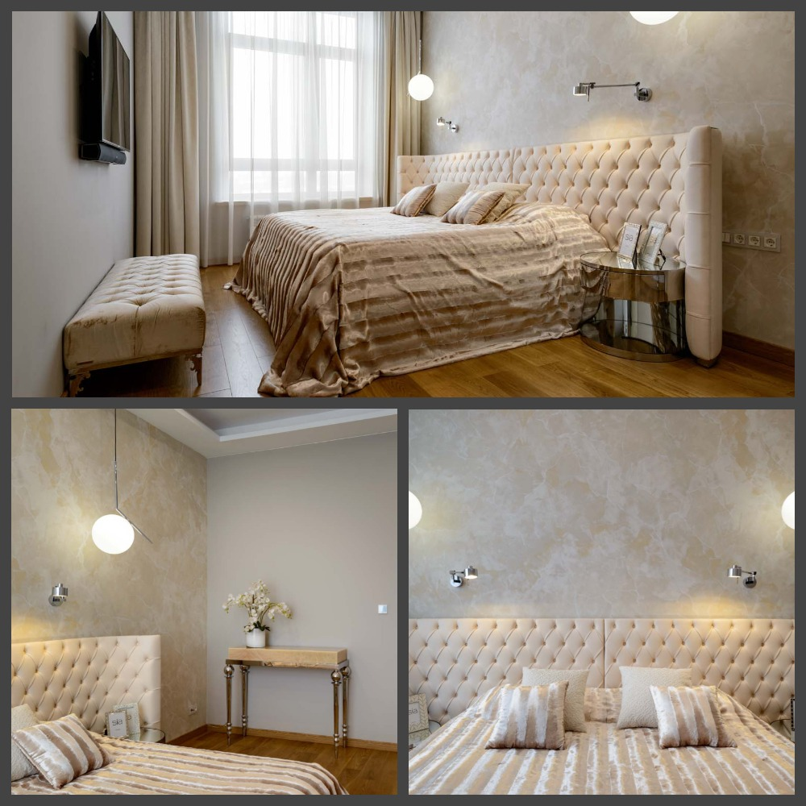
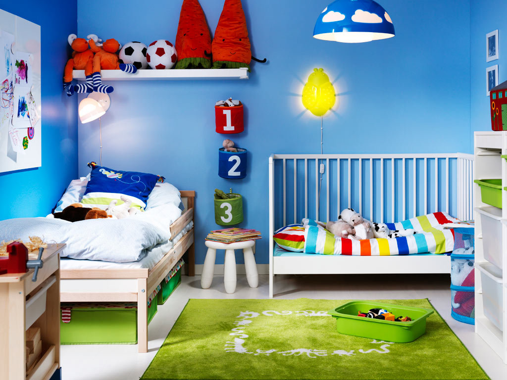
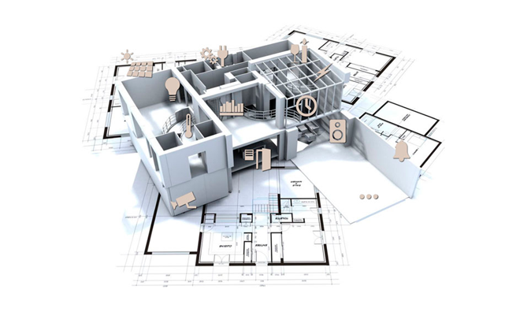
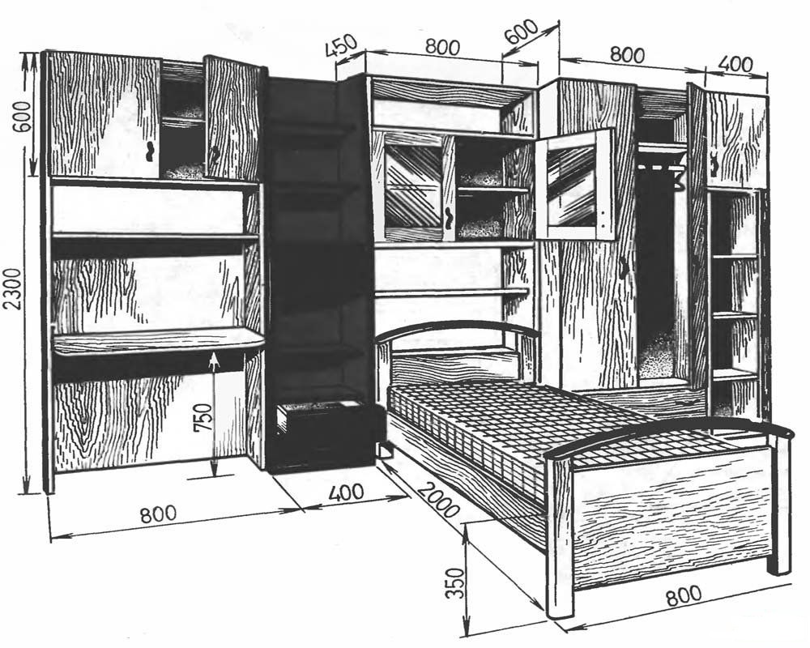
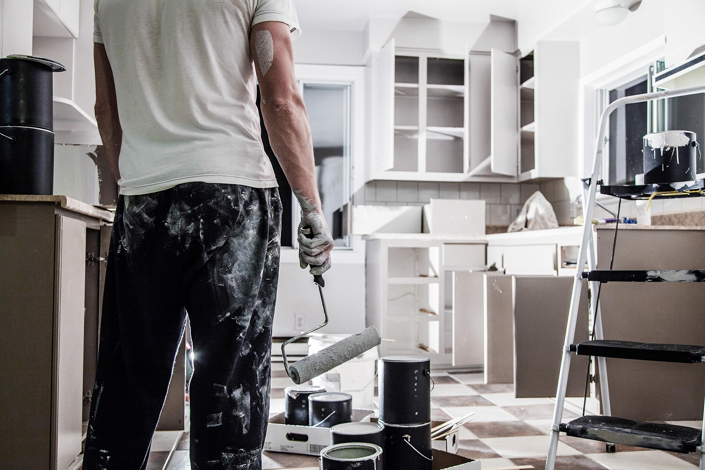
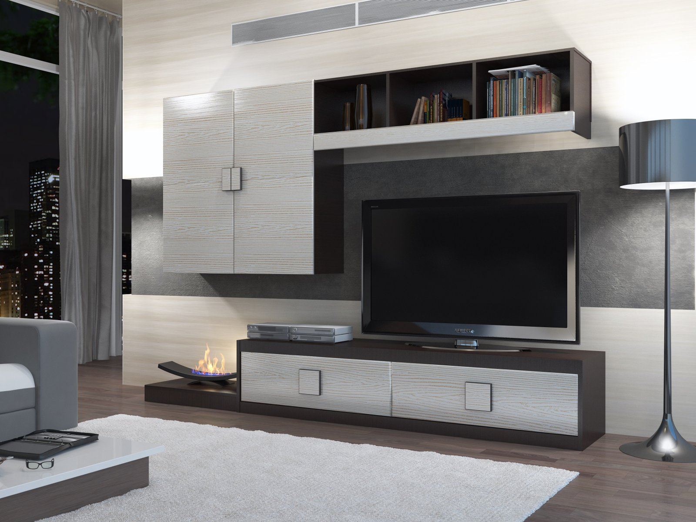

Repair & Construction Team
+7 (913) 983-56-58
R&C TEAM
Ремонт в Новосибирске
Услуги
Услуги
Электромотнажные работы
| Услуга | Цена, Р |
|---|---|
| Монтаж электропроводки | |
| Монтаж кабельканала шириной до 25 мм на бетонной поверхности | 70 за пог.м. |
| Монтаж кабельканала шириной до 25 мм на гипсолите, гипсокартоне, дереве | 70 за пог.м. |
| Монтаж кабельканала шириной до 25 мм на кирпичной поверхности | 70 за пог.м. |
| Монтаж кабельканала шириной свыше 25 мм на бетонной поверхности | 100 за пог.м. |
| Монтаж кабельканала шириной свыше 25 мм на гипсолите, гипсокартоне, дереве | 100 за пог.м. |
| Монтаж кабельканала шириной свыше 25 мм на кирпичной поверхности | 140 за пог.м. |
| Монтаж проводки в штробе | 40 за пог.м. |
| Монтаж проводки открытым способом в гофре | 30 за пог.м. |
| Монтаж проводки открытым способом на скобах, на бетоне и кирпиче | 40 за пог.м. |
| Монтаж проводки открытым способом на скобах на гипсолите, дереве | 40 за пог.м. |
| Штроба размером 20×20 мм в ГКЛ изготовление | 120 за пог.м. |
| Штроба размером 20×20 мм в бетоне, шифере изготовление | 240 за пог.м. |
| Штроба размером 20×20 мм в кирпиче изготовление | 170 за пог.м. |
| Штроба размером 40×40 мм в ГКЛ изготовление | 170 за пог.м. |
| Штроба размером 40×40 мм в бетоне, шифере изготовление | 380 за пог.м. |
| Штроба размером 40×40 мм в кирпиче изготовление | 290 за пог.м. |
| Штроба размером 70×70 мм в ГКЛ изготовление | 240 за пог.м. |
| Штроба размером 70×70 мм в бетоне, шифере изготовление | 550 за пог.м. |
| Штроба размером 70×70 мм в кирпиче изготовление | 400 за пог.м. |
| Штроба размером 100×100 мм в ГКЛ изготовление | 400 за пог.м. |
| Штроба размером 100×100 мм в бетоне, шифере изготовление | 790 за пог.м. |
| Штроба размером 100×100 мм в кирпиче изготовление | 690 за пог.м. |
| Установка электроточек | |
| Установка автомата электрического двухполюсного | 400 за шт |
| Установка автомата электрического однополюсного | 200 за шт |
| Установка автомата электрического трехполюсного | 600 за шт |
| Монтаж бокса наружного под электроавтоматы | 680 за шт |
| Установка звонка с кнопкой | 250 за шт |
| Коммутация коробки распаячной | 340 за шт |
| Установка коробки распаячной наружной | 200 за шт |
| Установка люстры простой (демонтаж старой включен в стоимость) | 540 за шт |
| Отверстия для подрозетника или коробки распаячной, выборка в бетоне | 400 за шт |
| Отверстия для подрозетника или коробки распаячной, выборка в кирпиче, гипсолите, дереве | 400 за шт |
| Установка электрощита, внутренний до 12 модулей | 2000 за шт |
| Установка электрощита, внутренний до 24 модулей | 2400 за шт |
| Установка электрощита, внутренний до 36 модулей | 2800 за шт |
| Установка электрощита, накладной до 12 модулей | 940 за шт |
| Установка электрощита, накладной до 24 модулей | 1200 за шт |
| Установка электрощита, накладной до 36 модулей | 1600 за шт |
| Монтаж подрозетника (коробки установочной, "стакан") | 110 за шт |
| Установка разветвителя телефонного и телевизионного | 250 за шт |
| Подключение реостата (диммера) для регулировки яркости света | 250 за шт |
| Установка розетки электрической, компьютерной, TV, ТФ или выключателя наружнего (прокладка кабеля оплачивается отдельно) | 200 за шт |
| Установка розетки электрической, компьютерной, TV, ТФ или выключателя внутреннего (прокладка кабеля оплачивается отдельно) | 240 за шт |
| Установка светильника мебельного внутреннего (прокладка проводки оплачивается отдельно) | 200 за шт |
| Установка светильника настенного (прокладка проводки оплачивается отдельно) | 250 за шт |
| Установка и подключение светильника потолочного типа "Армстронг" (прокладка проводки оплачивается отдельно) | 340 за шт |
| Установка светильника точечного (прокладка проводки оплачивается отдельно) | 80 за шт |
| Установка счетчика электрического однофазного | 400 за шт |
| Установка счетчика электрического трехфазного | 680 за шт |
| Замена старой электрической точки | 140 за шт |
| Установка трансформатора для галогеновых светильников | 340 за шт |
| Установка УЗО двухполюсного | 470 за шт |
| Установка УЗО четырехполюсного | 730 за шт |
| Вентилятор в вытяжке, установка с подключением (монтаж и демонтаж вентиляционной решетки оплачивается отдельно) | 400 за шт |
| Установка и подключение вентилятора канального накладного | 800 за шт |
| Вытяжка кухонная, монтаж с подключением | 2000 за шт |
| Установка сушилки электрической для рук (прокладка проводки оплачивается отдельно) | 400 за шт |
| Подключение стиральной машины | 470 за шт |
| Подключение электроплиты (прокладка кабеля оплачивается отдельно) | 470 за шт |
| Заземление электроприбора | 8000 за шт |
| Услуга | Цена |
|---|---|
| Демонтаж автомата | 80 за шт |
| Демонтаж кабельканала (короба) | 20 за пог. м. |
| Демонтаж коробки распаячной | 240 за шт |
| Демонтаж проводки электрической в кабельканале | 20 за пог. м. |
| Демонтаж проводки электрической открытой | 20 за пог. м. |
| Демонтаж счетчика электрического | 80 за шт |
| Демонтаж точки электрической | 60 за шт |
| Услуга | Цена, Р |
|---|---|
| Сверление отверстий под установку точечного светильника в гипсокартоне | 170 за шт |
| Сверление отверстий под установку точечного светильника в реечном потолке | 250 за шт |
| Сверление сквозное в бетонной стене толщиной до 25 см | 250 за шт |
| Сверление сквозное в кирпичной стене толщиной до 25 см | 200 за шт |
| Сверление сквозное в мягких стенах толщиной до 25 см | 140 за шт |
Сантехника
| Услуга | Цена, Р |
|---|---|
| Установка радиаторов отопления | 2950 за шт |
| Установка ванны чугунной простой 1,5 м | 3340 за шт |
| Установка ванны чугунной простой 1,7 м | 3600 за шт |
| Установка ванны металлической (акриловой) простой 1,5 м | 1470 за шт |
| Установка ванны металлической (акриловой) простой 1,7 м | 1760 за шт |
| Установка ванны чугунной угловой | 4000 за шт |
| Установка ванны металлической (акриловой) угловой | 2200 за шт |
| Установка ванны с гидромассажем | 4650 за шт |
| Установка унитаза простого | 800 за шт |
| Установка унитаза усложненного (угловой и т.п.) | 1030 за шт |
| Установка биде | 1340 за шт |
| Установка лейки гигиентической | 200 за шт |
| Установка инсталяции (без унитаза, умывальника и т.п.) | 1600 за шт |
| Установка раковины простой | 540 за шт |
| Установка "тюльпана" простого | 800 за шт |
| Установка мойки кухонной (без выреза в столешнице) | 540 за шт |
| Установка "Мойдодыра" простого | 1130 за шт |
| Установка "Мойдодыра" усложненного (с полкой и т.п.) | 1340 за шт |
| Установка душевой кабины простой со сборкой | 2670 за шт |
| Установка душевой кабины усложненной со сборкой (договорная) | 3900 за шт |
| Установка стиральной машины | 590 за шт |
| Установка посудомоечной машины | 1200 за шт |
| Установка смесителей | 460 за шт |
| Установка смесителей настенных | 560 за шт |
| Установка душевой стойки для лейки смесителя | 200 за шт |
| Установка сантехнических аксессуаров (крючки, мыльницы и т.п.) | 60 за шт |
| Установка полотенцесушителя | 2000 за шт |
| Установка водонагревателя накопительного | 1000 за шт |
| Установка водонагревателя проточного | 800 за шт |
| Штробление ж/б стен под трубу диаметром до 32 мм | 250 за пог. м. |
| Штробление кирпичных стен под трубу диаметром до 32 мм | 170 за пог. м. |
| Штробление гипсовых стен под трубу диаметром до 32 мм | 170 за пог. м. |
| Штробление бетонного пола под трубу диаметром до 32 мм | 200 за пог. м. |
| Штробление ж/б стен под трубу диаметром более 32 мм | 340 за пог. м. |
| Штробление кирпичных стен под трубу диаметром более 32 мм | 280 за пог. м. |
| Штробление гипсовых стен под трубу диаметром более 32 мм | 340 за пог. м. |
| Штробление бетонного пола под трубу диаметром более 32 мм | 540 за пог. м. |
| Обратная заделка штроб | 145 за пог. м. |
| Врезка в стояк отопления из стальных труб | 800 за шт |
| Врезка в сеть трубопроводов из стальных труб | 800 за шт |
| Врезка в сеть трубопроводов канализации из чугунных труб | 1600 за шт |
| Врезка в сеть трубопроводов канализации из труб ПВХ | 120 за шт |
| Прокладка канализационных труб | 80 за пог. м. |
| Установка ПВХ отводов, тройников для канализации | 80 за шт |
| Прокладка металлических труб водоснабжения и отопления на сварке | 200 за пог. м. |
| Прокладка металлических труб водоснабжения и отопления на резьбовом соединение | 120 за пог. м. |
| Резьбовое соединение стальных труб | 120 за шт |
| Утепление труб | 50 за пог. м. |
| Прокладка металлопластиковых труб | 120 за пог. м. |
| Установка обжимных фитингов для металлопластиковых труб | 110 за шт |
| Установка пресс-фитингов для металлопластиковых труб | 200 за шт |
| Прокладка медных труб | 170 за пог. м. |
| Установка фитингов для медных труб | 200 за шт |
| Установка фитингов для медных труб с помощью пайки | 200 за шт |
| Прокладка труб из сшитого полиэтилена РЕ-Х | 170 за пог. м. |
| Установка фитингов для труб из сшитого полиэтилена РЕ-Х | 170 за шт |
| Прокладка труб из полипропилена (РР) или полибутена (РВ) | 170 за пог. м. |
| Установка фитингов для труб из полипропилена (РР) или полибутена (РВ) с помощью диффузионной сварки | 170 за шт |
| Установка шарового крана | 200 за шт |
| Установка зеркал | 400 за шт |
| Установка фильтров глубокой очистки | 400 за шт |
| Установка фильтров тонкой очистки | 800 за шт |
| Установка фильтров многоступенчатой системы очистки воды | 1400 за шт |
| Установка сгонов | 120 за шт |
| Установка тройников | 200 за шт |
| Установка переходников, ниппелей, бочат, угольников, удлиннителей, муфт | 120 за шт |
| Установка манжетты резиновой | 60 за шт |
| Установка крана для стиральной машины | 200 за шт |
| Установка подводки для воды, газа | 200 за шт |
| Опресовка системы ХВС, ГВС (стандартный санузел) | 1600 за шт |
| Установка временного унитаза | 340 за шт |
| Установка встроенных смесителей | 1000 за шт |
| Установка встроенных кранов | 800 за шт |
| Услуга | Цена, Р |
|---|---|
| Демонтаж радиаторов отопления | 400 за шт |
| Демонтаж ванн чугунных | 1200 за шт |
| Демонтаж ванн акриловых | 600 за шт |
| Демонтаж раковины | 200 за шт |
| Демонтаж умывальника | 200 за шт |
| Демонтаж унитаза | 400 за шт |
| Демонтаж душевых кабин | 540 за шт |
| Демонтаж труб водопровода | 40 за пог. м. |
| Демонтаж труб отопления | 40 за пог. м. |
| Демонтаж труб канализации | 240 за шт |
| Демонтаж газовых плит | 340 за шт |
| Демонтаж котлов, водонагревателей | 600 за шт |
| Демонтаж смесителя | 200 за шт |
| Демонтаж полотенцесушителя | 400 за шт |
| Демонтаж сантехнических акссесуаров | 50 за шт |
| Демонтаж фитингов | 40 за шт |
| Демонтаж вентилей, кранов, редукторов, фильтров | 60 за шт |
Потолки
| Услуга | Цена, Р |
|---|---|
| Устройство подвесных потолков из ГКЛ 1-й уровень с устройством металлокаркаса | 350 за м2 |
| Устройство подвесных потолков из ГКЛ 2-й уровень с устройством металлокаркаса | 420 за м2 |
| Устройство подвесных потолков из ГКЛ 3-й уровень с устройством металлокаркаса или 2- ой уровень с нишами | 700 за м2 |
| Добавляется при криволинейной границе | 300 за м2 |
| Устройство подвесных потолков из плит "Армстронг" | 250 за м2 |
| Монтаж реечных, зеркальных потолков мал. площади до 8 кв.м (санузлы, кухни) | 340 за м2 |
| Монтаж реечных, зеркальных потолков бол. площади свыше 8 кв.м | 200 за м2 |
| Утепление потолка наклеиванием пенопласта | 180 за м2 |
| Устройство утепления потолка с постановкой дополнительного деревянного каркаса | 170 за м2 |
| Облицовка потолка плиткой стироловой | 110 за м2 |
| Устройство потолка из пластиковых реек или панелей ПВХ | 270 за м2 |
| Монтаж потолочного плинтуса | 80 пог. м. |
| Окраска потолочного плинтуса | 120 за пог. м. |
| Штукатурка потолка /10мм/20мм | 300 за м2 |
| Штукатурка потолка по сетке пластиковой | 300 за м2 |
| Штукатурка потолка по маякам наметом до 30 мм | 440 за м2 |
| Штукатурка потолка по маякам наметом свыше 30 мм | 470 за м2 |
| Монтаж металлической сетки | 80 за м2 |
| Расшивка, заделка трещин, рустов | 120 за пог. м. |
| Грунтовка потолков 1 слой | 30 за м2 |
| Шпатлевка потолка по ГКЛ с серпянкой | 230 за м2 |
| Шпатлевка потолка по штукатурке в два слоя | 210 за м2 |
| Шпатлевка потолка по сетке в два слоя | 250 за м2 |
| Финишное выравнивание шпатлевки при высококачественной окраске | 160 за м2 |
| Ошкуривание потолков | 60 за м2 |
| Окраска потолка в/д краской (матовой) в 2 слоя | 180 за м2 |
| Окраска потолка в/д краской (матовой) 3 слоя | 240 за м2 |
| Окраска потолка краской (глянцевой) 3 слоя с доп подготовкой | 600 за м2 |
| Нанесение декоративного покрытия многослойного | 600 за м2 |
| Отделка готовых потолков типа "Венецианская штукатурка" | 700 за м2 |
| Покрытие деревянных поверхностей лаком или тонирующими покрытиями в один слой | 110 за м2 |
| Покрытие деревянных поверхностей лаком или тонирующими покрытиями в два слоя | 160 за м2 |
| Облицовка потолка плиткой керамической | 1100 за м2 |
| Изготовление шаблона для потолочного карниза | 600 за шт |
| Наклейка фигурной ленты | 70 за пог. м. |
| Оклеивание потолков стеклохолстом | 200 за м2 |
| Оклеивание потолков флизелином под окраску | 200 за м2 |
| Оклеивание пробковым покрытием | 250 за м2 |
| Устройство подвесного потолка из вагонки с устройством каркаса | 450 за м2 |
| Устройство натяжных потолков | 400 за м2 |
| Устройство лепнины из твердого полиуретана под светильники | 200 за шт |
| Установка розеток из гипса | 200 за шт |
| Ликвидация протечек потолков | 340 за м2 |
| Устройство пароизоляции потолков | 60 за м2 |
| Грунтовка потолков бетоноконтактом | 60 за м2 |
| Заделка штроб с грунтом | 120 за м2 |
| Гидроизоляция потолков | 200 за м2 |
| Услуга | Цена, Р |
|---|---|
| Демонтаж реечных потолков | 50 за м2 |
| Демонтаж подвесных потолков из ГКЛ, досок, панелей ПВХ, вагонки | 120 за м2 |
| Демонтаж подвесных потолков "Армстронг" | 80 за м2 |
| Снятие старой краски | 100 за м2 |
| Демонтаж лепнины без сохранения | 80 за пог. м. |
| Снятие старой штукатурки потолков | 140 за м2 |
| Демонтаж деревянных перекрытий | 100 за м2 |
| Снятие обоев с потолков | 110 за м2 |
| Расчистка потолка от побелки с промывкой | 120 за м2 |
| Снятие полистерольных плиток | 30 за м2 |
| Снятие старой шпатлевки | 130 за м2 |
| Расчистка рустов | 40 М.п. |
Стены
| Услуга | Цена, Р |
|---|---|
| Устройство перегородок в 1/4 кирпича | 660 за м2 |
| Устройство перегородок в 1/2 кирпича | 580 за м2 |
| Устройство перегородок в 1 кирпич | 820 за м2 |
| Кладка кирпича особой сложности | 25 за шт |
| Кладка стен из пенобетонных блоков, пазогребневых плит | 530 за м2 |
| Штукатурка стен из кирпича, пеноблоков | 170 за м2 |
| Штукатурка и выравнивание стен гипсовыми составами толщ. до 30 мм с установкой маячковых направляющих | 360 за м2 |
| Штукатурка и выравнивание стен гипсовыми составами толщ. более 30 мм с установкой маячковых направляющих | 370 за м2 |
| Шпатлевка стен по штукатурке в 2 слоя | 130 за м2 |
| Шпатлевка стен в 2 слоя | 190 за м2 |
| Финишное выравнивание (шпатлевка) | 120 за м2 |
| Ошкуривание стен | 60 за м2 |
| Грунтовка стен 1 слой | 35 за м2 |
| Грунтовка стен бетоноконтактом | 70 за м2 |
| Окраска стен простая (2 слоя) матовой краской | 110 за м2 |
| Окраска стен высококачественная (3-4 слоя) матовой краской | 220 за м2 |
| Устройство облицовки стен из ГКЛ в 1 слой с устройством металлокаркаса | 260 за м2 |
| Добавляется при криволинейной границе | 140 за м2 |
| Шпатлевка стен по ГКЛ с проклейкой швов серпянкой | 160 за м2 |
| Устройство теплозвукоизоляции стен (мин.вата, пенополистирол) | 130 за м2 |
| Устройство пароизоляции из пергамина | 50 за м2 |
| Облицовка стен пластиковыми панелями с обрешеткой и молдингами | 340 за м2 |
| Облицовка стен ДСП, фанерой | 250 за м2 |
| Устройство коробов из ГКЛ в санузле (трубы отопления, с/у) | 1500 за шт |
| Оклеивание стен простыми обоями без подбора рисунка и флизелином под окраску | 180 за м2 |
| Оклеивание стен виниловыми обоями и обоями с подбором рисунка | 180 за м2 |
| Оклеивание стен обоями шелкография | 180 за м2 |
| Оклеивание стен текстильными обоями | 260 за м2 |
| Оклеивание стен стеклохолстом | 130 за м2 |
| Оклеивание стен шелковыми обоями vip класса, пробковым покрытием | 340 за м2 |
| Оклеивание стен флизелиновыми обоями | 250 за м2 |
| Наклейка бордюра обойного | 50 за пог. м. |
| Жидкие обои | 400 за м2 |
| Обшивка стен вагонкой на кляммерах, установка нащельников с устройством деревянного каркаса | 450 за м2 |
| Нанесение декоративного покрытия многослойного | 540 за м2 |
| Заделка штроб с грунтом | 60 за пог. м. |
| Облицовка стен плиткой керамической стандартного размера (20×25,30×20, 25×33) без затирки швов | 900 за м2 |
| Облицовка стен плиткой керамической не стандартного размера (15×15,30×60, 20×50, 40×60) без затирки швов | 900 за м2 |
| Облицовка стен плиткой керамической не стандартного размера (10×10, разноразмерной плиткой, мозайкой на сетке, мраморной плиткой) без затирки швов | 1100 за м2 |
| Облицовка стен плиткой керамогранит без затирки швов | 730 за м2 |
| Добавляется при укладке в несколько цветов, устройстве фризов, полос, изменении диагонали укладки | 170 за м2 |
| Устройство керамического бордюра | 130 за пог. м. |
| Устройство объемного керамического бордюра с подрезкой в углах | 200 за пог. м. |
| Подрезка плитки на внешних углах под 45 гр. | 540 за пог. м. |
| Установка раскладки для плитки | 40 за пог. м. |
| Высверливание отверстий в керамической плитке | 200 за шт |
| Высверливание отверстий в керамограните | 340 за шт |
| Покрытие деревянных поверхностей лаком или тонирующими покрытиями в один слой | 100 за м2 |
| Покрытие деревянных поверхностей лаком или тонирующими покрытиями в два слоя | 100 за м2 |
| Вставки из стеклоблоков поштучно в ниши, стены | 200 за шт |
| Укладка стеклоблоков (устройство перегородок, стен) | 2350 за м2 |
| Устройство пароизоляции с проклейкой стыков | 40 за м2 |
| Затирка швов в плитке керамической стандартного размера | 110 за м2 |
| Затирка швов в плитке керамической не стандартного размера (10×10, разноразмерной плиткой, мозайкой на сетке, мраморной плитки) | 280 за м2 |
| Гидроизоляция стен | 170 за м2 |
| Устройство наружных и внутренних уголков при штукатурке | 130 за пог. м. |
| Армирование стен сеткой | 80 за м2 |
| Устройство перегородок из ГКЛ с металлическим каркасом и изоляцией | 440 за м2 |
| Устройство каркасно-обшивочных перегородок | 540 за м2 |
| Устройство перегородок из пенобетонных блоков | 540 за м2 |
| Устройство армированных перегородок из пенобетонных блоков | 600 за м2 |
| Шпатлевка по ГКЛ с проклейкой швов серпянкой | 120 за м2 |
| Ошкуривание цилиндрических поверхностей | 540 за м2 |
| Заполнение каркасных перегородок изоляционными матами | 40 за м2 |
| Услуга | Цена, Р |
|---|---|
| Демонтаж кирпичных перегородок толщ.1/2 кирпича | 250 за м2 |
| Демонтаж кирпичных перегородок толщ.1 кирпич | 300 за м2 |
| Демонтаж кирпичных перегородок, стен толщ.1,5 кирпича | 340 за м2 |
| Демонтаж каркасно-обшивочных перегородок | 80 за м2 |
| Демонтаж обшивки стен из ГКЛ на металлокаркасе | 180 за м2 |
| Демонтаж перегородок из ГКЛ | 80 за м2 |
| Демонтаж пеноблочных, гипсолитовых перегородок | 120 за м2 |
| Демонтаж ж/б стен, перегородок | 2900 за м2 |
| Демонтаж сантехнических кабин гипсолитовых | 170 за м2 |
| Демонтаж облицовки стен из ДСП | 40 за м2 |
| Снятие старой краски со стен | 80 за м2 |
| Снятие старых обоев со стен | 40 за м2 |
| Сбивка старой керамической плитки | 100 за м2 |
| Снятие старой штукатурки со стен | 120 за м2 |
| Снятие старой краски с радиаторов | 200 за м2 |
| Вырезание части внешней стены под окном балкона | 4200 за м2 |
| Снятие старой шпатлевки | 100 за м2 |
Проемы
| Услуга | Цена, Р |
|---|---|
| Устройство проема в ж/б стенах | 2800 за м2 |
| Усиление стандартного проема металлоконструкциями | 500 за пог. м. |
| Устройство проема в пеноблочных стенах | 650 за м2 |
| Установка межкомнатных дверных блоков стоимостью до 250 у.е. | 1200 за шт |
| Установка межкомнатных дверных блоков стоимостью от 250-500 у.е., либо пустотелых дверей | 1700 за шт |
| Установка межкомнатных дверных блоков стоимостью от 500 у.е. | 2200 за шт |
| Установка металлической двери простой | 3500 за шт |
| Врезка замков, петель, ручек и др. в двери до 250 у.е | 350 компл. |
| Врезка замков, петель, ручек и др. в двери от 250-500 у.е., либо пустотелых дверей | 460 за компл. |
| Врезка замков, петель, ручек и др. в двери от 500 у.е | 720 за компл. |
| Установка наличников (без роспуска) | 30 за пог. м. |
| Установка доборов (без роспуска) | 80 за пог. м. |
| Установка отбойников, стопоров | 60 за шт |
| Роспуск наличников, доборов | 170 за пог. м. |
| Покраска наличников | 50 за пог. м. |
| Покрытие лаком дверного полотна и коробки | 150 за м2 |
| Покрытие лаком наличников | 40 за м2 |
| Установка готовых арок в дверные проемы | 900 за шт |
| Устройство арочных проемов от 90 до 140 см | 1680 за м2 |
| Устройство встроенных шкафов, антресолей из ДСП | 680 за м2 |
| Установка дверцы с/т для водоснабжения и канализации | 400 за шт |
| Установка сантехнических лючков с облицовкой плиткой | 600 за шт |
| Установка сантехнических лючков | 200 за шт |
| Установка подоконников | 340 за пог. м. |
| Установка штукатурных уголков | 130 за пог. м. |
| Установка пластиковых уголков | 40 за пог. м. |
| Штукатурка оконных и дверных откосов шир от 25 до 30 см | 440 за пог. м. |
| Устройство откосов из ГКЛ | 340 за пог. м. |
| Устройство откосов из ЦСП | 400 за пог. м. |
| Установка пластиковых откосов | 340 за пог. м. |
| Шпатлевание откосов под окраску | 170 за пог. м. |
| Шпатлевание откосов по сетке под окраску | 200 за пог. м. |
| Третья шпатлевка при высококачественной окраске откосов | 250 за пог. м. |
| Окраска откосов | 130 за пог. м. |
| Очистка оконных проемов от старой краски | 120 за пог. м. |
| Окраска оконных проемов | 80 за м2 |
| Окраска радиаторов отопления 7-9 секций | 220 за шт |
| Ошкуривание радиаторов отопления 7-9 секций | 320 за м2 |
| Устройство экрана под ванну из пеноблоков или кирпича | 1700 за шт |
| Установка экранов на ванну 1,5 м | 800 за шт |
| Установка экранов на ванну 1,7 м | 930 за шт |
| Установка экранов на радиаторы | 220 за шт |
| Установка отливов | 240 за пог. м. |
| Монтаж карнизов для штор | 340 за шт |
| Устройство ниш глубиной до 12 см в кирпичных стенах | 400 за м2 |
| Услуга | Цена, Р |
|---|---|
| Демонтаж оконных блоков без сохранения | 250 за шт |
| Демонтаж дверных блоков без сохранения | 200 за шт |
| Демонтаж дверных блоков с сохранением | 450 за шт |
| Демонтаж наличников без сохранения | 20 за пог. м. |
| Демонтаж наличников с сохранением | 40 за пог. м. |
| Демонтаж ниш глубиной до 12 см в кирпичных стенах | 350 за м2 |
| Разборка порогов в балконных, дверных проемах | 400 за шт |
| Разборка остекления лоджий | 60 за м2 |
| Демонтаж подоконников | 140 за шт |
| Разборка заполнений оконных и дверных проемов | 60 за м2 |
| Демонтаж старых цементных откосов | 190 за пог. м. |
| Демонтаж оконных витражей | 60 за м2 |
Полы
| Услуга | Цена, Р |
|---|---|
| Укладка керамзита толщ до 10 см | 80 за м2 |
| Укладка керамзита толщ более 10 см | 120 за м2 |
| Устройство обмазочной гидроизоляции полов в 2 слоя | 140 за м2 |
| Устройство гидроизоляции полов из гидроизола | 340 за м2 |
| Укладка пароизолирующих материалов | 50 за м2 |
| Укрытие полов пленкой | 20 за м2 |
| Грунтовка пола с очисткой основания от пыли | 50 за м2 |
| Устройство цементной стяжки толщ до 50 мм помаякам | 350 за м2 |
| Устройство цементной стяжки толщ более 50 мм по маякам | 470 за м2 |
| Устройство цементной стяжки по маякам с армирующей сеткой | 570 за м2 |
| Устройство чистовой стяжки из наливных полов | 210 за м2 |
| Настилка черновых полов из досок | 120 за м2 |
| Устройство деревянных полов по лагам | 400 за м2 |
| Устройство утепления полов из пенополистирольных и минераловатных плит | 130 за м2 |
| Герметизация или проклейка стыков ламината и паркетной доски | 60 за м2 |
| Устройство ламинированного паркета на замках стандартного размера (палубная укладка с подложкой) | 350 за м2 |
| Устройство полов из паркетной доски на замках стандартного размера (палубная укладка с подложкой) | 350 за м2 |
| Добавляется при укладке ламината и паркетной доски по диагонали | 100 за м2 |
| Добавляется при укладке ламината и паркетной доски на клею | 80 за м2 |
| Добавляется при укладке ламината и паркетной доски не стандартного размера | 220 за м2 |
| Устройство полов из штучного паркета простая укладка | 820 за м2 |
| Устройство полов из штучного паркета усложненная укладка | 980 за м2 |
| Покрытие паркета лаком за 1 раз | 120 за м2 |
| Устройство пробкового покрытия | 380 за м2 |
| Устройство покрытий из "коммерческого" линолеума на клею | 180 за м2 |
| Устройство покрытий из линолеума | 120 за м2 |
| Устройство покрытия из ковролина | 160 за м2 |
| Устройство ковровых покрытий плиточных | 260 за м2 |
| Устройство покрытий пола из керамических плиток стандартного размера (30×30, 33×33) на клею, в один цвет, по готовому основанию | 600 за м2 |
| Устройство покрытий пола из керамических плиток не стандартного размера (30×60, 40×40, 50×50 и др.) на клею, в один цвет, по готовому основанию | 700 за м2 |
| Устройство покрытий пола из керамических плиток не стандартного размера (мелкоразмерной) на клею, в один цвет, по готовому основанию | 750 за м2 |
| Добавляется при укладке разноразмерной плитки | 150 за м2 |
| Добавляется при укладке в несколько цветов, устройстве фризов, полос | 180 за м2 |
| Добавляется при изменении диагонали укладки | 60 за м2 |
| Добавляется при укладке со сложным орнаментом | 580 за м2 |
| Добавляется при укладке керамогранита или при толщине плитки более 8 мм | 120 за м2 |
| Устройство каркаса для подиума с обшивкой фанерой | 320 за м2 |
| Устройство подиума из кирпича | 2800 за шт |
| Укладка оргалита | 60 за м2 |
| Устройство оснований пола из фанеры по лагам | 180 за м2 |
| Устройство оснований пола из фанеры по бетонному основанию на клею | 270 за м2 |
| Высококачественная окраска полов | 180 за м2 |
| Простая окраска полов | 70 за м2 |
| Устройство "теплого пола" | 350 за м2 |
| Установка плинтуса деревянного | 80 за пог. м. |
| Установка плинтуса деревянного (твердых пород) | 130 за пог. м. |
| Установка плинтуса пластикового с соединительными элементами | 60 за пог. м. |
| Добавляется на установку плинтусов к криволинейным стенам (закругления) | 60 за пог. м. |
| Покрытие плинтусов лаком за 3 раза | 50 за пог. м. |
| Установка порожков декоративных | 140 за пог. м. |
| Устройство порожков из плитки керамической | 550 за пог. м. |
| Услуга | Цена, Р |
|---|---|
| Демонтаж деревянного пола на лагах | 150 за м2 |
| Демонтаж старого паркета без сохранения | 110 за м2 |
| Демонтаж керамической плитки | 100 за м2 |
| Демонтаж плинтусов без сохранения | 20 за пог. м. |
| Демонтаж плинтусов с сохранением | 80 за пог. м. |
| Снятие старой подложки, оргалита, фанеры | 80 за м2 |
| Снятие старого линолеума, ковролина | 50 за м2 |
| Разборка цементной стяжки толщиной до 5 см | 110 за м2 |
| Разборка цементной стяжки толщиной свыше 5 см | 170 за м2 |
| Разборка армированного пола сантехкабин | 800 за м2 |
| Демонтаж ж/б плинтуса в санузлах | 240 за пог. м. |
| Разборка гидроизоляции | 60 за м2 |
| Демонтаж порожков | 30 за пог. м. |
Вентиляция
| Услуга | Цена, Р |
|---|---|
| Установка вентиляционных решеток | 130 за шт |
| Установка ПВХ вентиляционных каналов с элементами | 200 за пог. м. |
| Установка вентиляционных каналов из стальных оцинкованных труб | 240 за пог. м. |
| Устройство фланцевых соединений при врезке в существующий вентиляционный канал | 100 за шт |
| Установка вентиляционных каналов из гофрированных труб | 50 за пог. м. |
Ремонт квартир "под ключ"

Ремонт квартир «под ключ» — это комплекс работ, включающий не только декоративную отделку помещений, но и разводку электрики, замену сантехнических труб, обновление напольного покрытия и многое другое.
Все эти мероприятия направлены на повышение уровня комфорта и снижение стоимости обслуживания жилья.
Обращаясь к нам, вы можете уже иметь готовый дизайн проект или довериться нашим специалистам, которые предложат интересные решения в части обустройства интерьера любого современного помещения. Параллельно согласовывается бюджет ремонта и разрабатывается смета предполагаемых закупок.
Обращаясь к нам, вы можете уже иметь готовый дизайн проект или довериться нашим специалистам, которые предложат интересные решения в части обустройства интерьера любого современного помещения. Параллельно согласовывается бюджет ремонта и разрабатывается смета предполагаемых закупок.
Ремонт ванных комнат

Ремонт ванной комнаты под ключ в Новосибирске - одна из самых распространенных услуг в ремонтной среде.
Ни один ремонт квартиры не обходится без качественного ремонта ванной, который позволит наслаждаться интерьером и ощущать комфорт от пребывания в этом помещении.
Мы выполним все виды ремонта ванной комнаты - от косметического, капитального, до евроремонта ванной комнаты по дизайн проекту
Мы выполним все виды ремонта ванной комнаты - от косметического, капитального, до евроремонта ванной комнаты по дизайн проекту
Ремонт на кухне

Самостоятельно сделать качественный ремонт в кухне крайне сложно и затратно.
Так же у нас можно заказать мебель для кухни, под ваши нужды и размеры. Шкафчики, столешницы, наш мастер сделает для вас качественную мебель за приемлимую цену
- Повышенная влажность
- Cпециальная мебель
- Cистема вентиляции
- Большое количество бытовой техники
Так же у нас можно заказать мебель для кухни, под ваши нужды и размеры. Шкафчики, столешницы, наш мастер сделает для вас качественную мебель за приемлимую цену
Ремонт в спальне

Ремонт спальни под ключ рекомендуется начать с разработки схемы мебелировки и расстановки разной техники.
- Вы должны понимать, каких габаритов будет ваша мебель, чтобы все двери и выдвижные ящики могли беспрепятсвенно открываться, а комната не была перегружена.
- У вас должно быть понимание, где будет стоять различная техника, чтобы элементарно спланировать розетки.
- Все поверхности и оконные системы должны быть "дышащими", это напрямую влияет на качество Вашего сна, значит, влияет на здоровье.
Ремонт в детской

Ремонт детской - это возможность реализовать наши десткие фантазии.
Кто из нас в детстве не мечтал жить на космической станции, в прекрасном дворце или даже на необитаемом острове?
Мы имеем все возможности, чтобы создать вышим любимым детям сказку, в которую они будут возвращаться каждый день. Кроме того, при ремонте детской мы сможем продумать весь необходимый функционал:
Мы имеем все возможности, чтобы создать вышим любимым детям сказку, в которую они будут возвращаться каждый день. Кроме того, при ремонте детской мы сможем продумать весь необходимый функционал:
- Рабочее место для учебы
- Хранение одежды
- Творческий и спортивный инвентарь
Дизайн-проект

Дизайн квартир - это сложный вид работы: в ходе разработки дизайн-проекта необходимо учитывать многое:
Хотите создать индивидуальный интерьер? Мечтаете о стильном дизайне в гостиной, спальне, детской, на кухне? Заказывайте в нашей компании дизайн-проект, мы сотрудничаем с дизайнером, который для вас проект любой сложности, поможет подобрать подходящие материалы.
- Технические нормы
- Грамотно осуществить зонирование помещения
- Предусмотреть освещение помещения
- Предусмотреть зоны хранения
Хотите создать индивидуальный интерьер? Мечтаете о стильном дизайне в гостиной, спальне, детской, на кухне? Заказывайте в нашей компании дизайн-проект, мы сотрудничаем с дизайнером, который для вас проект любой сложности, поможет подобрать подходящие материалы.
Изготовление мебели

Мы предлагаем для Вас изготовить мебель на заказ, которая производится по индивидуальным проектам и размерам, наш мастер изготовит для вас мебель, которая подгоняется под любые размеры помещения, учитывая геометрию и архитектуру.
А так же создадим и реализуем индивидуальный проект мебели как корпусной, так и встраиваемой.
Наши цены на изготовление мебели (кухни на заказ, детские, шкафы купе, гардеробные, мебель в ванную, компьютерные столы, стенки, горки, комоды) и другую корпусную мебель самые лояльные. Которые значительно отличаются от цены перекупов. Правильный расчет всех деталей будущей мебели это не только экономия пространства, но и ваших денег!
Наши цены на изготовление мебели (кухни на заказ, детские, шкафы купе, гардеробные, мебель в ванную, компьютерные столы, стенки, горки, комоды) и другую корпусную мебель самые лояльные. Которые значительно отличаются от цены перекупов. Правильный расчет всех деталей будущей мебели это не только экономия пространства, но и ваших денег!
Тарифы на ремонт
Косметический
От 1800р за м2

- Демонтажные работы
- Шпатлевка стен
- Грунтование пола и стен
- Устройство наливных полов
- Настил линолеума, ковролина
- Оклейка стен обоями
- Установка наличников и плинтусов
- Частичная замена электрики
- Устройство откосов из ПВХ, сендвич-панелей
Капитальный
От 4500р за м2

- Демонтажные работы
- Устройство стяжки и гидроизоляция пола
- Грунтование пола и стен
- Устройство наливных полов
- Кирпичная кладка
- Настил линолеума, ковролина
- Оклейка стен обоями
- Установка наличников и плинтусов
- Установка реечного потолка в ванной
- Электромонтажные и сантехнические работы
- Устройство откосов, подоконников и карнизов
"Под ключ"
От 7500р за м2

- Демонтажные работы
- Устройство стяжки и гидроизоляция пола
- Грунтование пола и стен
- Устройство наливных полов
- Кирпичная кладка
- Настил линолеума, ковролина
- Оклейка стен обоями
- Установка наличников и плинтусов
- Установка реечного потолка в ванной
- Электромонтажные и сантехнические работы
- Устройство откосов, подоконников и карнизов
- Установка дверей
Хочешь заказать ремонт или мебель?
Звони или заполняй форму заявки.
Мы тебя ждем!
Звони или заполняй форму заявки.
Мы тебя ждем!
Хотите задать вопрос по ремонту?
Заполните форму, и мы свяжемся с вами в ближайшее время.